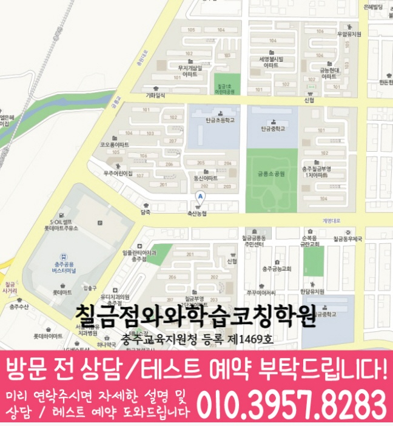

단원 성취도와 풀이 습관을 먼저 확인해, 단순 문제풀이가 아닌 개념-유형-오답의 흐름으로 학습 순서를 설계합니다.
지역별 수강 안내
칠금동 중2 수학학원
방문할 지점과 수강 조건
칠금점 수강 정보
- 연결 지점
- 칠금점와와학습코칭학원
- 수학 수강 학년
- 초1~초6 / 중1~중3 / 고1~고3
- 방문 주소
- 충청북도 충주시 칠금동 계명대로 29 3층
제공된 지점 자료에서 칠금점의 중2 수학 수강 학년을 확인했습니다. 현재 모집과 시간표는 상담에서 확인해 주세요.


이미지는 그대로 읽을 수 있으며, 이미지를 누르면 확대됩니다. 작은 글씨는 확대 화면의 원본 크기로 확인하세요.
학습커리큘럼
배우는 내용과 공부의 시작점을 함께 살펴보세요
학교 진도와 현재 이해도에 맞춰 학습 범위·순서·확인 과제를 찾아보세요.
학생·학부모 교육정보
과목별 공부 방법도 함께 살펴보세요
시험 준비, 과목별 공부와 학습 습관을 구체적인 예시로 확인하세요.
충청북도 충주시 칠금동에서 중2 수학학원을 찾는 학생을 위해, 와와학습코칭센터 칠금점은 수학 개념 점검부터 단원별 유형 학습, 오답 관리, 내신 대비까지 이어지는 학습 흐름을 제공합니다. 동시에 영어·국어(영수)까지 함께 점검해 과목 간 학습 균형을 맞추고, 학생의 약점을 단계적으로 보완합니다.
칠금동 중2 수학 수업의 핵심 포인트
수학은 개념과 유형을, 영어는 문법·독해 흐름을, 국어는 핵심 개념과 독해 전략을 함께 점검해 성적 상승을 체계화합니다.
학년별 학습 전략
중등(중1~중3)
- 학교 진도와 내신 대비를 함께 맞춰 학습 계획을 조정합니다.
- 수학은 단원별 개념·유형을 반복 점검하고, 영수는 취약 파트를 집중 보완합니다.
중2(핵심 내신 구간)
- 중2 수학에서 자주 발생하는 개념 혼동과 계산·서술 실수를 유형별로 잡습니다.
- 영어 문법·독해, 국어 독해 전략까지 함께 관리해 종합 성적을 올립니다.
시험 대비
- 시험 범위를 기준으로 복습 주기와 문제 난도를 조절해 효율을 높입니다.
- 실수 유형과 자주 틀리는 문제를 우선 점검하고, 시험 직전에는 약점만 집중 정리합니다.
충주시 칠금동 와와학습코칭센터 칠금점은 학생의 현재 상태를 기반으로 중2 수학(및 영수) 학습을 체계적으로 정리하고, 상담을 통해 내신 대비 전략까지 자세히 안내드립니다.
센터 위치 안내
주소
충청북도 충주시 칠금동 계명대로 29 3층
오시는 길
와와학습코칭센터 칠금점은 충청북도 충주시 칠금동 계명대로 29 3층에 있습니다.
상담에 참고할 학교 목록
학교별 내신 수업과 수강 가능 여부는 센터에 확인해 주세요.
초등학교
칠금초등학교
탄금초등학교
중학교
충주미덕중학교
충주북여자중학교
충주여자중학교
충주중앙중학교
충주중학교
칠금중학교
탄금중학교
고등학교
국원고등학교
충주여자고등학교
충주예성여자고등학교
과목별 수강 가능 학년
국어
초1
초2
초3
초4
초5
초6
중1
중2
중3
고1
고2
고3
영어
초1
초2
초3
초4
초5
초6
중1
중2
중3
고1
고2
고3
수학
초1
초2
초3
초4
초5
초6
중1
중2
중3
고1
고2
고3
과학
초1
초2
초3
초4
초5
초6
중1
중2
중3
고1
고2
고3
사회
초1
초2
초3
초4
초5
초6
중1
중2
중3
고1
고2
고3
수강 안내
역사·한국사는 운영하지 않는다는 안내가 있습니다.
학원 등록 정보
교육비 참고와 확인할 조건
지역 공통 참고 금액입니다. 이 지점의 확정 교습비는 안내 자료와 상담에서 확인해 주세요.
기존 공통 안내: 서울 외 (1회 90~100분, 단위: 원)
| 횟수 | 초등 | 중등 | 고등 |
|---|---|---|---|
| 주 3회 | 219,000 | 236,000 | 269,000 |
| 주 4회 | 279,000 | 301,000 | 344,000 |
| 주 5회 | 339,000 | 366,000 | 419,000 |
위 표는 기존 공통 안내 금액으로, 현재 센터별 교습비와 다를 수 있습니다. 실제 과목·수업 시간·추가 프로그램과 최종 금액은 교습비 안내 자료 및 센터 상담을 통해 확인해 주세요.
중2 수학 상담부터 오답관리까지 이어지는 흐름
중2 수학은 중학교 수학의 중심 개념이 본격적으로 쌓이는 시기입니다. 상담에서는 학교 진도, 최근 시험 결과, 자주 틀리는 유형, 풀이 기록을 함께 확인해 학생에게 맞는 개념 보강과 내신 대비 순서를 잡습니다.
현재 수준 확인
학교 진도, 최근 시험 결과, 어려운 단원, 숙제 수행률과 실수 유형을 확인합니다.
개념과 유형 진단
일차함수, 연립방정식, 도형, 확률 등 핵심 단원의 개념 이해와 문제 적용 과정을 나누어 봅니다.
플래너 실행 점검
단원별 복습, 유형 반복, 시험 범위 마감 계획을 세우고 실제 수행 여부를 확인합니다.
오답 원인 분석
틀린 문제를 개념 부족, 조건 누락, 계산 실수, 풀이 순서 오류로 분류해 다음 학습으로 연결합니다.
CONSULTING CHECKLIST
칠금동 중2 수학학원 상담 전 체크리스트
실제 상담 전 아래 항목을 확인하면 학생에게 필요한 영어·수학 학습 방향을 더 빠르게 정리할 수 있습니다.
- 현재 교재사용 중인 교재와 진도를 확인합니다.
- 최근 시험지점수보다 반복되는 오답 유형을 확인합니다.
- 공부 시간평소 공부 시간과 숙제 수행 정도를 봅니다.
- 상담 목표성적, 습관, 오답, 시험 대비 중 우선순위를 정합니다.
STUDY GUIDE
칠금동 중2 수학 학원 학습관리 포인트
칠금동 중2 수학 학원을 찾는 학생이라면 중2 과정에서 필요한 수학 학습 목표를 먼저 정리하는 것이 좋습니다. 현재 학교 진도와 최근 시험 결과, 숙제 수행 습관을 함께 보면 상담 방향이 훨씬 구체적입니다.
공식 암기보다 단원 핵심 개념을 말로 설명할 수 있는지 확인하고, 설명이 막히는 부분부터 다시 정리합니다.
학교 시험에 자주 나오는 기본·응용 유형을 구분하고, 풀이 순서를 스스로 재현할 수 있게 반복합니다.
계산 실수, 조건 해석 오류, 개념 부족, 시간 부족을 나누어 기록하면 다음 복습 계획이 더 정확해집니다.
충청 충주시 칠금동 상담 전 체크
최근 시험지, 학교 진도, 어려운 단원, 숙제 수행 정도를 함께 정리해두면 상담에서 학생에게 필요한 학습 순서를 더 빠르게 잡을 수 있습니다.
함께 보면 좋은 학습가이드
현재 페이지의 학년·과목과 연결되는 정보성 콘텐츠입니다. 지역 페이지와 함께 읽으면 상담 준비와 학습 계획을 더 구체화할 수 있습니다.
칠금동 관련 학원 페이지
현재 보고 있는 지역 안에서 센터 안내와 학년·과목별 상세 페이지로 바로 이동할 수 있습니다.
칠금동 중2 수학학원 상담이 필요하신가요?
중2 수학의 현재 개념 이해도, 내신 대비 계획, 중3 과정 준비, 오답 패턴을 상담문의로 남겨주시면 학습 방향을 구체적으로 확인할 수 있습니다.
상담문의수강 전에 자주 묻는 질문
칠금동에 있는 별도 지점인가요?
이 동네 안내에서 연결되는 곳은 칠금점와와학습코칭학원입니다. 실제 방문 주소는 충청북도 충주시 칠금동 계명대로 29 3층입니다.
중2 수학을 수강할 수 있나요?
제공된 지점 자료에서 칠금점의 중2 수학 수강 학년을 확인했습니다. 현재 모집과 시간표는 상담에서 확인해 주세요.
교육비 표의 금액으로 바로 등록할 수 있나요?
지역 공통 참고표는 개별 지점의 확정 교습비가 아닙니다. 교습비 안내 자료에서 과목당 금액과 수업 시간·횟수·교재비를 확인하고 최종 비용을 상담에서 확인하세요.
안내 자료 대조: . 현재 모집·시간표·최종 비용은 지점에서 확인해 주세요.
칠금점 사진 안내

칠금점 폴더로 제공된 사진입니다. 촬영 시점과 현재 공간 구성이 다를 수 있습니다.